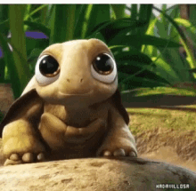

Las tortugas son los reptiles más antiguos de los que se tiene conocimiento, ya que existen en nuestro planeta desde hace al menos 200 millones de años. Pueden vivir en la tierra incluso desiertos (tortugas terrestres), en el mar (tortugas marinas) y en los ríos (tortugas de agua dulce), por lo que han conquistado casi todos los ecosistemas terrestres, excepto los polares.
Las especies de tortugas son fácilmente conocidas por su apariencia longeva y el caparazón que envuelve y protege la mayor parte de su cuerpo, exceptuando las extremidades, la cola, el cuello y la cabeza (aunque estas partes también las pueden recoger ante la detección de algún peligro) El caparazón está ligado a su columna vertebral, por lo que es una parte indispensable de su cuerpo.
